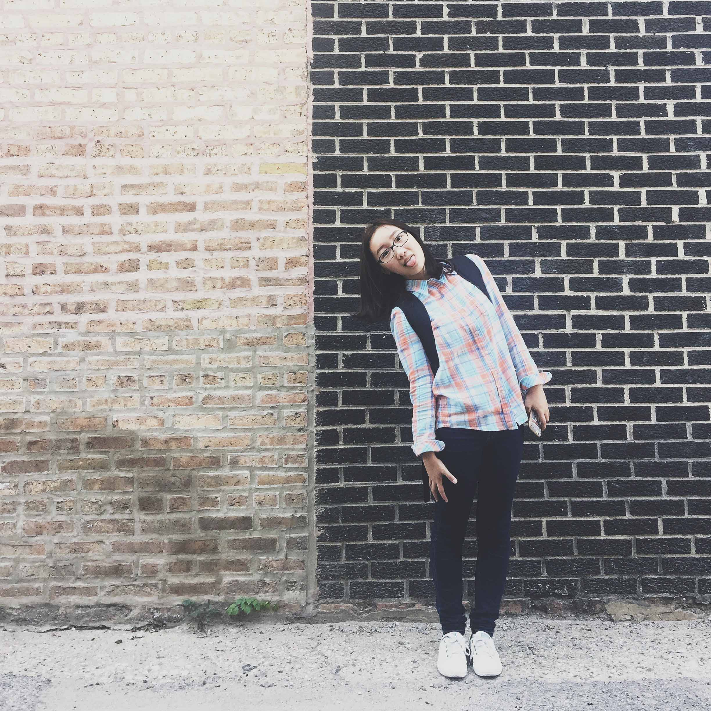

A little bit about me
Hi, I'm Jingwen Yang. Some people love to call me 波波堂 (sounds like bo-bo-town). It is not a town, but me!
I was born and grow up in Shanghai and I'm now studying at IIT Institute of Design in Chicago. My background was industrial design, and now I focus more on user experience design, design research and strategy. As a designer, I enjoy exploring the world. I think design is about understanding people, using creative way to solve current problems and creating value. And that is where my passion is.
#designer💡🛠 @IIT ID #food🍝🍵🍫 #travel 🗺 📷 #Chicago🌆 #一个上海小姑娘😊 >>Make some food and enjoy.
By the way, I love kumamon!!!